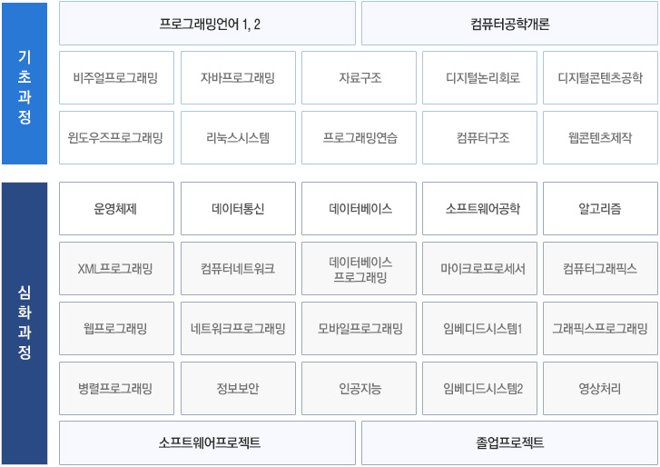

교육과정 구성
전공기초 과정에서는 컴퓨터의 기본 원리를 이해하고 프로그래밍 원리 등에 관한 기초 교과목을 학습하여 컴퓨터 하드웨어를 이해하고, 소프트웨어 시스템 개발의 기본이 되는 프로그래밍 언어의 기본적인 사용 능력을 개발하여 컴퓨터 시스템의 기본 이론과 개념을 습득하도록 한다. 전공심화 과정은 산업체에서 즉시 활용 가능한 소프트웨어 전문 인력이 될 수 있도록 실무 중심의 교육으로 교과 과정을 운영한다. 산학협동을 통한 현장실습(인턴쉽)과 프로젝트 과목을 수행함으로써 산업체에서 요구하는 소프트웨어 전문가를 양성할 수 있도록 한다.
전공기초 과정
- 컴퓨터 공학의 개요 및 컴퓨터시스템과 윈도우즈 등의 비쥬얼 환경과 관련한 기본 프로그래밍 능력을 배양한다.
- 프로그래밍 알고리즘의 이해 및 적응 능력을 키우기 위한 프로그래밍 기법을 익히며 최신 기술 동향을 반영한 프로그래밍 언어에 대한 적응력을 키운다.
- 컴퓨터 시스템과 관련한 컴퓨터 하드웨어와 소프트웨어의 기본 이론과 개념을 습득하도록 한다.
전공심화 과정
- 임베디드 시스템과 운영체제를 이해하고 Linux 시스템 등을 이용한 프로그래밍 능력을 배양한다.
- 인터넷의 TCP/IP 구조를 이해하도록 하고 클라이언트 서버 환경에서의 C와 C++ 네트워크 프로그래밍 능력을 키운다.
- 멀티미디어 기본 개념을 익히고 그래픽, 사운드, 영상, 애니메이션 등의 기본 편집 능력을 학습하여 멀티미디어 컨텐츠 제작 능력을 배양한다
- 산학협동을 통한 현장 실습(인턴쉽)을 수행하여 산업체에서 요구하는 IT 전문인을 양성한다.
